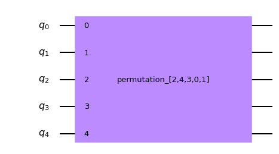

Permutation¶
-
class
Permutation(num_qubits, pattern=None, seed=None)[código fonte]¶ An n_qubit circuit that permutes qubits.
Return an n_qubit permutation circuit implemented using SWAPs.
- Parâmetros
num_qubits (
int) – circuit width.pattern (
Optional[List[int]]) – permutation pattern. If None, permute randomly.seed (
Optional[int]) – random seed in case a random permutation is requested.
- Levanta
CircuitError – if permutation pattern is malformed.
- Reference Circuit:
- 
- Expanded Circuit:
Attributes
Returns a list of ancilla bits in the order that the registers were added.
Return calibration dictionary.
Returns a list of classical bits in the order that the registers were added.
Return the circuit data (instructions and context).
Return the global phase of the circuit in radians.
Return the number of ancilla qubits.
Return number of classical bits.
Convenience function to get the number of parameter objects in the circuit.
Return number of qubits.
Convenience function to get the parameters defined in the parameter table.
Returns a list of quantum bits in the order that the registers were added.
Methods
Permutation.__getitem__(item)Return indexed operation.
Return number of operations in circuit.
Permutation.add_calibration(gate, qubits, …)Register a low-level, custom pulse definition for the given gate.
Permutation.add_register(*regs)Add registers.
Permutation.append(instruction[, qargs, cargs])Append one or more instructions to the end of the circuit, modifying the circuit in place.
Permutation.assign_parameters(param_dict[, …])Assign parameters to new parameters or values.
Permutation.barrier(*qargs)Apply
Barrier.Permutation.bind_parameters(value_dict)Assign numeric parameters to values yielding a new circuit.
Permutation.cast(value, _type)Best effort to cast value to type.
Converts several classical bit representations (such as indexes, range, etc.) into a list of classical bits.
Permutation.ccx(control_qubit1, …)Apply
CCXGate.Permutation.ch(control_qubit, target_qubit)Apply
CHGate.Return the current number of instances of this class, useful for auto naming.
Return the prefix to use for auto naming.
Permutation.cnot(control_qubit, target_qubit)Apply
CXGate.Permutation.combine(rhs)Append rhs to self if self contains compatible registers.
Permutation.compose(other[, qubits, clbits, …])Compose circuit with
othercircuit or instruction, optionally permuting wires.Permutation.control([num_ctrl_qubits, …])Control this circuit on
num_ctrl_qubitsqubits.Permutation.copy([name])Copy the circuit.
Count each operation kind in the circuit.
Permutation.cp(theta, control_qubit, …[, …])Apply
CPhaseGate.Permutation.crx(theta, control_qubit, …[, …])Apply
CRXGate.Permutation.cry(theta, control_qubit, …[, …])Apply
CRYGate.Permutation.crz(theta, control_qubit, …[, …])Apply
CRZGate.Permutation.cswap(control_qubit, …[, …])Apply
CSwapGate.Permutation.csx(control_qubit, target_qubit)Apply
CSXGate.Permutation.cu(theta, phi, lam, gamma, …)Apply
CUGate.Permutation.cu1(theta, control_qubit, …[, …])Apply
CU1Gate.Permutation.cu3(theta, phi, lam, …[, …])Apply
CU3Gate.Permutation.cx(control_qubit, target_qubit)Apply
CXGate.Permutation.cy(control_qubit, target_qubit)Apply
CYGate.Permutation.cz(control_qubit, target_qubit)Apply
CZGate.Permutation.dcx(qubit1, qubit2)Apply
DCXGate.Call a decomposition pass on this circuit, to decompose one level (shallow decompose).
Permutation.delay(duration[, qarg, unit])Apply
Delay.Return circuit depth (i.e., length of critical path).
Permutation.diag_gate(diag, qubit)Deprecated version of QuantumCircuit.diagonal.
Permutation.diagonal(diag, qubit)Attach a diagonal gate to a circuit.
Permutation.draw([output, scale, filename, …])Draw the quantum circuit.
Permutation.extend(rhs)Append QuantumCircuit to the right hand side if it contains compatible registers.
Permutation.fredkin(control_qubit, …)Apply
CSwapGate.Take in a QASM file and generate a QuantumCircuit object.
Permutation.from_qasm_str(qasm_str)Take in a QASM string and generate a QuantumCircuit object.
Permutation.h(qubit)Apply
HGate.Permutation.hamiltonian(operator, time, qubits)Apply hamiltonian evolution to to qubits.
Permutation.has_register(register)Test if this circuit has the register r.
Permutation.i(qubit)Apply
IGate.Permutation.id(qubit)Apply
IGate.Permutation.initialize(params, qubits)Apply initialize to circuit.
Invert (take adjoint of) this circuit.
Permutation.iso(isometry, q_input, …[, …])Attach an arbitrary isometry from m to n qubits to a circuit.
Permutation.isometry(isometry, q_input, …)Attach an arbitrary isometry from m to n qubits to a circuit.
Permutation.iswap(qubit1, qubit2)Apply
iSwapGate.Permutation.mcmt(gate, control_qubits, …)Apply a multi-control, multi-target using a generic gate.
Permutation.mcp(lam, control_qubits, …)Apply
MCPhaseGate.Permutation.mcrx(theta, q_controls, q_target)Apply Multiple-Controlled X rotation gate
Permutation.mcry(theta, q_controls, …[, …])Apply Multiple-Controlled Y rotation gate
Permutation.mcrz(lam, q_controls, q_target)Apply Multiple-Controlled Z rotation gate
Permutation.mct(control_qubits, target_qubit)Apply
MCXGate.Permutation.mcu1(lam, control_qubits, …)Apply
MCU1Gate.Permutation.mcx(control_qubits, target_qubit)Apply
MCXGate.Permutation.measure(qubit, cbit)Measure quantum bit into classical bit (tuples).
Permutation.measure_active([inplace])Adds measurement to all non-idle qubits.
Permutation.measure_all([inplace])Adds measurement to all qubits.
DEPRECATED: use circuit.reverse_ops().
Permutation.ms(theta, qubits)Apply
MSGate.How many non-entangled subcircuits can the circuit be factored to.
Return number of non-local gates (i.e.
Computes the number of tensor factors in the unitary (quantum) part of the circuit only.
Computes the number of tensor factors in the unitary (quantum) part of the circuit only.
Permutation.p(theta, qubit)Apply
PhaseGate.Permutation.power(power[, matrix_power])Raise this circuit to the power of
power.Permutation.qasm([formatted, filename])Return OpenQASM string.
Converts several qubit representations (such as indexes, range, etc.) into a list of qubits.
Permutation.qubit_duration(*qubits)Return the duration between the start and stop time of the first and last instructions, excluding delays, over the supplied qubits.
Permutation.qubit_start_time(*qubits)Return the start time of the first instruction, excluding delays, over the supplied qubits.
Permutation.qubit_stop_time(*qubits)Return the stop time of the last instruction, excluding delays, over the supplied qubits.
Permutation.r(theta, phi, qubit)Apply
RGate.Permutation.rcccx(control_qubit1, …)Apply
RC3XGate.Permutation.rccx(control_qubit1, …)Apply
RCCXGate.Permutation.remove_final_measurements([inplace])Removes final measurement on all qubits if they are present.
Permutation.repeat(reps)Repeat this circuit
repstimes.Permutation.reset(qubit)Reset q.
Return a circuit with the opposite order of wires.
Reverse the circuit by reversing the order of instructions.
Permutation.rx(theta, qubit[, label])Apply
RXGate.Permutation.rxx(theta, qubit1, qubit2)Apply
RXXGate.Permutation.ry(theta, qubit[, label])Apply
RYGate.Permutation.ryy(theta, qubit1, qubit2)Apply
RYYGate.Permutation.rz(phi, qubit)Apply
RZGate.Permutation.rzx(theta, qubit1, qubit2)Apply
RZXGate.Permutation.rzz(theta, qubit1, qubit2)Apply
RZZGate.Permutation.s(qubit)Apply
SGate.Permutation.sdg(qubit)Apply
SdgGate.Returns total number of gate operations in circuit.
Permutation.snapshot(label[, snapshot_type, …])Take a statevector snapshot of the internal simulator representation.
Permutation.snapshot_density_matrix(label[, …])Take a density matrix snapshot of simulator state.
Take a snapshot of expectation value <O> of an Operator.
Permutation.snapshot_probabilities(label, qubits)Take a probability snapshot of the simulator state.
Take a stabilizer snapshot of the simulator state.
Take a statevector snapshot of the simulator state.
Permutation.squ(unitary_matrix, qubit[, …])Decompose an arbitrary 2*2 unitary into three rotation gates.
Permutation.swap(qubit1, qubit2)Apply
SwapGate.Permutation.sx(qubit)Apply
SXGate.Permutation.sxdg(qubit)Apply
SXdgGate.Permutation.t(qubit)Apply
TGate.Permutation.tdg(qubit)Apply
TdgGate.Permutation.to_gate([parameter_map, label])Create a Gate out of this circuit.
Permutation.to_instruction([parameter_map])Create an Instruction out of this circuit.
Permutation.toffoli(control_qubit1, …)Apply
CCXGate.Permutation.u(theta, phi, lam, qubit)Apply
UGate.Permutation.u1(theta, qubit)Apply
U1Gate.Permutation.u2(phi, lam, qubit)Apply
U2Gate.Permutation.u3(theta, phi, lam, qubit)Apply
U3Gate.Permutation.uc(gate_list, q_controls, q_target)Attach a uniformly controlled gates (also called multiplexed gates) to a circuit.
Permutation.ucrx(angle_list, q_controls, …)Attach a uniformly controlled (also called multiplexed) Rx rotation gate to a circuit.
Permutation.ucry(angle_list, q_controls, …)Attach a uniformly controlled (also called multiplexed) Ry rotation gate to a circuit.
Permutation.ucrz(angle_list, q_controls, …)Attach a uniformly controlled (also called multiplexed gates) Rz rotation gate to a circuit.
Permutation.unitary(obj, qubits[, label])Apply unitary gate to q.
Return number of qubits plus clbits in circuit.
Permutation.x(qubit[, label])Apply
XGate.Permutation.y(qubit)Apply
YGate.Permutation.z(qubit)Apply
ZGate.Return number of operations in circuit.
Permutation.__getitem__(item)Return indexed operation.